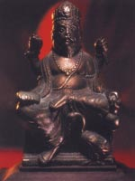

Брахма, в індуїстської міфології творець і правитель світу, батько богів і людей; в класичному індуїзмі він входить в тріаду верховних богів поряд з Вішну і Шивою. Творець всесвіту, він протистоїть Вішну, який її зберігає, і Шиві, який її руйнує. Відповідно до одного з міфів, Брахма створив зі свого тіла богиню Сатарупу. Вона була така прекрасна, що він не міг відірвати від неї очей. Коли Сатарупа відходила в сторону, уникаючи його погляду, у нього з'являлася нова голова, повернена в її сторону. Нарешті Брахма переконав красуню стати його дружиною. Вони провели у відокремленому місці сто священних років, після закінчення яких народився Maнy, перша людина.
Інший міф розповідає, як спочатку всесвіт була занурена в темряву. Блукаючі в космічному океані насіння породило золоте яйце: "У цьому яйці Брахма провів рік, потім силою думки розділив яйце навпіл". З однієї половини він створив небо, божественну сферу, з іншого - землю, матеріальну сферу, а між ними помістив повітряний простір; далі з'явилися п'ять елементів - вода, вогонь, земля, повітря, ефір - потім думка, боги, зірки, час, гори, рівнини, моря, річки, люди, мова, пристрасть, гнів і т.д. Нарешті, з яйця з'явився бог Брахма і розділився на дві частини - жіночу і чоловічу. Ці істоти породили все інше.
За іншою версією, Брахма вийшов з яйця у вигляді первосущества Пуруши. У нього була тисяча ніг, тисяча ступень, тисяча рук, тисяча очей, тисяча осіб і тисяча голів. Стародавні вважали, що Брахма живе сто "власних" років, рівних 311 040 000 000 000 »людських" років. Потім вогонь, що виривається з дна океану, знищує всесвіт і самого Брахму, а після ста божественних років хаосу народжується новий Брахма. У деяких джерелах Брахму називають Нараяной, або "вийшли з вод". У цьому образі він лежав на аркуші лотоса, що пливе по первозданним водам, і смоктав палець ноги - символ вічності. Падіння величі Брахми пояснюється в міфі про походження Шиви.
Згідно з переказами, Брахма і Вішну посперечалися, хто з них більш могутнім. У розпал суперечки величезний фалос, символ Шиви, піднявся з світового океану, охопленого полум'ям. Коли Брахма і Вішну стали розглядати фалос, він розкрився. У ньому боги виявили Шиву і змушені були визнати його зверхність. Брахму часто зображують з чотирма головами і руками, в яких він тримає Веди, священні індійські трактати, жезл, посудину з водою з Гангу і гірлянду троянд, що сидить на гусаку або лебедя. Дружина його - красуня Сарасваті, богиня вчення і покровителька мистецтв, наук і красномовства.